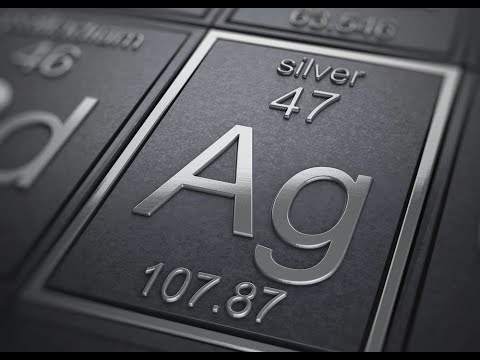
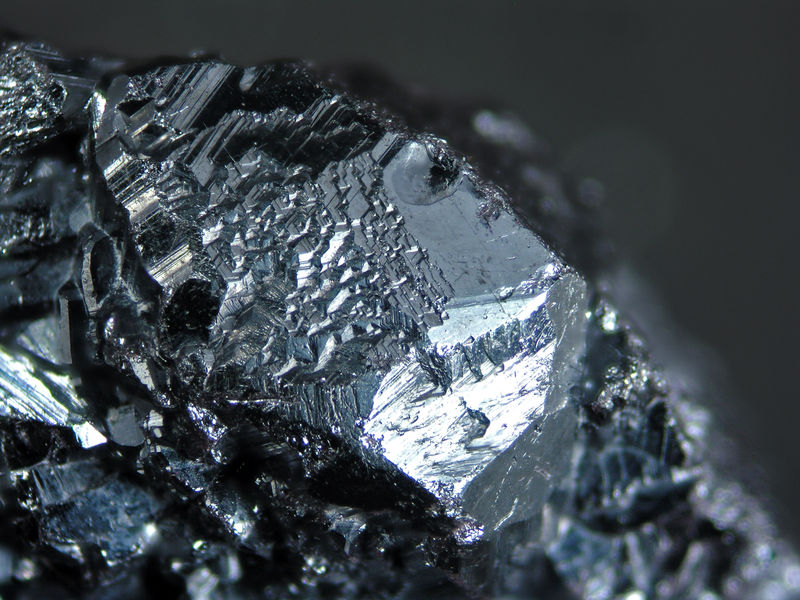
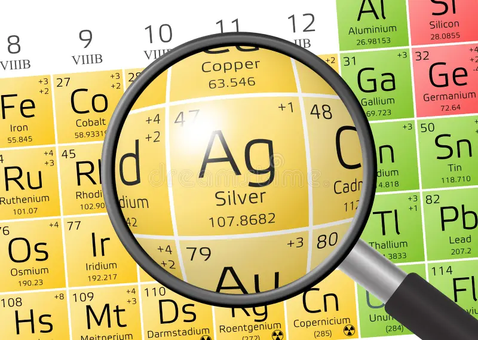

Серебро
Серебро́ (химический символ — Ag, от лат. Argentum) — химический элемент 11 группы (по устаревшей классификации — побочной подгруппы первой группы, IB), пятого периода периодической системы химических элементов Д. И. Менделеева, с атомным номером 47. Простое вещество серебро — это ковкий, пластичный переходный благородный металл серо-белого цвета.

Начало использования серебра связано с культурами, освоившими медь и золото. Древнейшие изделия из серебра известны не позднее конца 5-го или рубежа 5–4-го тыс. до н. э. (Варненский могильник, Караново VI, Гумельница Балкано-Карпатской металлургической провинции; Бейджесултан в Юго-Западной Анатолии; культура Балатон – Ласинья на северо-западе Среднего Подунавья). С 4-го тыс. серебряные украшения, сосуды, фигурки, инкрустации и другие изделия известны в майкопской культуре на Северном Кавказе, Коруджутепе и Арслантепе (Восточная Анатолия), Библе (Левант), Уре (Южная Месопотамия) и др. Бо́льшую часть серебра получали из свинцовых руд, что подтверждено находками с 4-го тыс. (Хабуба-Кабира на Среднем Евфрате) свинцового глёта (PbO), возникающего при купелировании (трейбовании) – окислительном отделении свинца от серебра в расплавленном состоянии. Основные месторождения известны в Центральном Иране и Анатолии, откуда серебро распространяется в Циркумпонтийской металлургической провинции. С 3-го тыс. на Ближнем Востоке слитки серебра становятся формой денег (для 2-го тыс. до н. э. отношение стоимости серебра к меди – 1:180). В среднем и позднем бронзовых веках серебро известно от Евразийской степной металлургической провинции (в том числе рудники и месторождения Урала, Казахстана, Саяно-Алтая) до многих регионов Европы (месторождения на Иберийском п-ове, в Восточных Альпах, позднее Лаврийские рудники, рудники в Богемии и др.). В Русском государстве собственные источники серебра открыты в конце 15 в. н. э. на Северном Урале, позднее – на о. Медвежий в Белом море.

Серебро – самый распространённый из благородных металлов; содержание в земной коре 8·10−6 % по массе, в морской воде 1,5·10−8–2,9·10−7 %, пресной – 2,7·10−8 %. Известно более 60 содержащих серебро минералов: серебро самородное и природные сплавы Ag с Cu и Аu; халькогениды (аргентит Ag2S, пираргирит Ag3SbS3, прустит Ag3AsS3 и др.); галогениды (кераргирит AgCl и др.).
Первая стадия переработки всех содержащих серебро руд – флотационное и гравитационное обогащение. Дальнейшие методы выделения серебра зависят от типа руды и содержания Ag и подразделяются на пирометаллургические и гидрометаллургические. Сульфидные руды подвергают обжигу – окислительному, восстановительному (или хлорирующему). Серебряные руды перерабатывают после обогащения методом цианирования: руду обрабатывают в водном растворе NaCN или KCN в присутствии О2 и затем серебро извлекают из комплексных цианидов восстановлением металлами или с использованием ионного обмена. Для получения серебра высокой чистоты (99,999 %) сырой металл подвергают электролитическому аффинажу в растворе AgNO3 с осаждением на катоде (примеси переходят в шлам). Все содержащие серебро отходы промышленности (отработанные фотоматериалы, контакты, источники питания и т. п.) подвергаются переработке с целью извлечения вторичного серебра, которое вновь расходуется в промышленности (60–70 % от общего потребления). Объём мирового производства серебра 23,5 тыс. т/год (2020).

Серебро используется для изготовления кино- и фотоматериалов, сплавов с Pd, Аu, Сu, Zn, контактов, припоев, проводящих слоёв, элементов реле в электротехнике и электронике, стоматологических сплавов с Аu, Сu, Hg, Sn, серебряно-цинковых аккумуляторов, обладающих высокой энергоёмкостью (космическая и оборонная техника), оксидно-серебряных элементов питания часов, монет, ювелирных изделий, украшений, столовой посуды, зеркал, аппаратов в пищевой промышленности, катализаторов (дожигания CО, восстановления NO, эпоксидирования этилена, процессов окисления в органическом синтезе) и т.д.